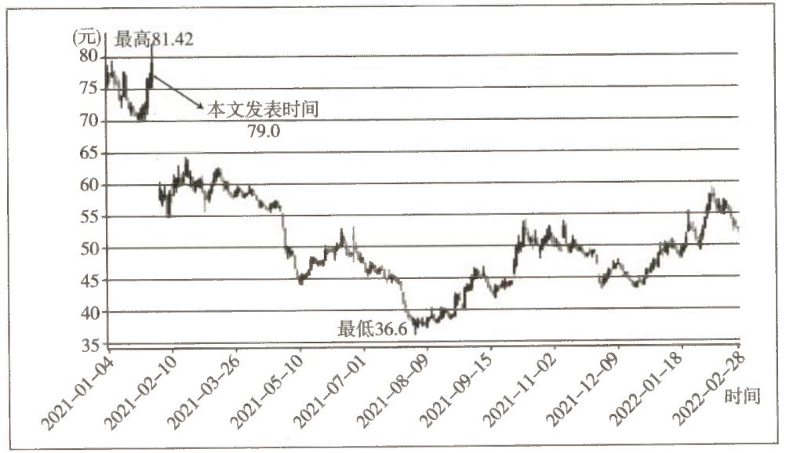

对上海机场补充协议的理解和判断
本文以上海机场为例，展示了在持续跟踪一家企业时，面对企业经营环境发生变化，该如何应对的思考。本文对企业的经营情况进行了非常客观的分析讲解，堪称教科书，值得反复学习。
一、对补充协议的基本判断
1.1 事件背景
本周五（2021 年 1 月 29 日），上海机场同时披露了两件事：
| 事项 | 内容 |
|---|---|
| 预亏公告 | 预计 2020 年亏损 十二三亿元 |
| 补充协议 | 公司与日上上海就机场免税店分成问题签署补充协议 |
这个倒是预料之中的事情。早在去年 11 月，老唐就提出如下观点：
1.2 投资上海机场的四种情景
因此，投资上海机场的情景其实就两种可下手、两种无法下手：
| 疫情 | 股价 | 能否下手 |
|---|---|---|
| 受控 | 还没涨上去 | ✅ 可以下手 |
| 不受控 | 悲观情绪下跌得很便宜 | ✅ 可以下手 |
| 受控 | 股价已经上去了 | ❌ 无法下手 |
| 不受控 | 但股价就是不下来 | ❌ 无法下手 |
1.3 补充协议改变了什么
按照老唐对今天这份补充协议的理解，即便疫情受控，上海机场向上的空间也被锁死了。投资上海机场只能在一种情况下，那就是：股价被悲观情绪摧毁时。
在这个判断下，周一开盘，我会卖掉 2020 年 11 月 6 日以 66.66 元买入的 1000 股观察仓——再少的金钱也值得被尊重。
二、补充协议内容详解
2.1 原协议："下有保底，上不封顶"
原协议规定的是：保底销售提成对比实际销售比例提成，上海机场按照其中较高的数字收，即"下有保底，上不封顶"模式。
表 23-1 2019—2025 年上海机场预计每年保底销售提成（单位：亿元）
| 合同期间 | 预计每年保底销售提成 |
|---|---|
| 2019 | 35.25 |
| 2020 | 41.58 |
| 2021 | 45.59 |
| 2022 | 62.88 |
| 2023 | 68.59 |
| 2024 | 74.64 |
| 2025 | 81.48 |
| 合计 | 410 |
这种情况下，上海机场每年最坏情况下能够获得多少净利润是可以大致计算出的。至于最好情况，当作安全边际对待就好。而昨天披露的补充协议，则改变了这个情况。
2.2 补充协议的核心分界线
补充协议写得有点绕，老唐尝试"中翻中"做个说明。首先，补充协议将国际客流量（含港澳台地区）分为两种情况：
| 情况 | 协议原文表述 | 换算后的直白表述 |
|---|---|---|
| 情况一 | 当月实际国际客流量 ≤ 2019 年月均国际客流量的 80% | 当月实际国际客流量 ≤ 256.76 万人次 |
| 情况二 | 当月实际国际客流量 > 2019 年月均国际客流量的 80% | 当月实际国际客流量 > 256.76 万人次 |
换算依据（据老唐积累的数据）：
| 指标 | 2019 年实际数据 |
|---|---|
| 国际客流量 | 3851.36 万人次 |
| 全部旅客吞吐量 | 7615.35 万人次 |
| 国际客流占比 | 约 50.6% |
2.3 情况一：客流 ≤ 256.76 万人次，原约定保底失效
此时原约定保底失效，改为按人头计费：
两个调节系数的设置规则如下：
| 系数 | 挂钩指标 | 取值区间与方向 |
|---|---|---|
| 客流调节系数 | 月实际国际客流量与 2019 年同一月份实际国际客流量的比率（注意：不是月均，是 2019 年同月实际值） | 从 30% 到 120%，设置了从高到低递减的系数 |
| 面积调节系数 | 实际开业面积占合同总面积的比例 | 从低于 10% 至高于 70%，设置了从高到低递减的系数 |
系数的设计意图与解读：
| 要点 | 说明 |
|---|---|
| 递减设计的目的 | 在实际客流没有归零（国际航班依然运营）的情况下，实现客流量越少，上海机场从单个客人身上提取的比例越高 |
| 极端情形 | 如果日上上海到了关门停业的地步，上海机场也就不收钱了，双方共渡难关 |
| 数据披露情况 | 这两个系数的具体数据没有披露 |
| 中免的说法 | 系数是"拍脑袋"定下的，核心是双方一致认可：绝对不可以让上海机场连续两年亏损被 ST，即保证上海机场 2021 年不能亏损① |
对投资者而言，这个系数的准确数字是多少并不重要。真正用到这个系数的时候，上海机场一定是负增长（相比 2019 年），而且净利润也少得可怜。届时，对于公司的投资价值和股价表现而言，都是朝下的推动力，系数大点儿或小点儿，程度差异不会太大。
收入本书时补充说明——2021 年 11 月出台的 ST 新规规定，上市公司即使连续两年亏损，但只要年度主营业务收入高于 1 亿元，也不会被 ST。这个兜底条款不需要考虑了。
2.4 情况二：客流 > 256.76 万人次，按"对应年度保底"折月
此时计费公式很简单：
但是，"对应年度"究竟是哪一年，双方约定了一个细致化的对应表——它由当年实际国际客流量落在哪个区间决定，与自然年份无关。
表 23-2 不同实际国际客流量对应的保底销售提成
| 年份 | 年实际国际客流（X）（万人次） | 年保底销售提成（亿元） |
|---|---|---|
| 2019 | X ≤ 4172 | 35.25 |
| 2020 | 4172 < X ≤ 4404 | 41.58 |
| 2021 | 4404 < X ≤ 4636 | 45.59 |
| 2022 | 4636 < X ≤ 4868 | 62.88 |
| 2023 | 4868 < X ≤ 5100 | 68.59 |
| 2024 | 5100 < X ≤ 5360 | 74.64 |
| 2025 | 5360 < X | 81.48 |
2021 年，如果当年实际国际客流量高于 4404 万人次，则"对应年度保底销售提成"就是 2021 年的 45.59 亿元；但如果 2021 年实际客流量落在 2020 年的数据区间，则 2021 年的"对应年度保底销售提成"就是 2020 年对应的 41.58 亿元。
2.5 "绕口令"实例演算
举个例子来说明这个"绕口令"。比如 2021 年 3 月，国际客流量 260 万人次，满足大于 256.76 万人次的条件，日上上海当月应付上海机场的销售提成怎么计算呢？
依然还要看 2021 年结束后实际的国际客流量数据。这之前双方是否预支预付不重要，反正都是跑不了的大企业，最后轧差就是了。
| 2021 年全年实际国际客流量 | 落入区间 | 对应年度保底 | 2021 年 3 月应结费用 |
|---|---|---|---|
| 4500 万人次 | 2021 年区间 | 45.59 亿元 | 45.59 ÷ 12 ≈ 3.8 亿元 |
| 4300 万人次 | 2020 年区间（4172 万～4404 万） | 41.58 亿元 | 41.58 ÷ 12 ≈ 3.5 亿元 |
| 4100 万人次 | 2019 年区间（≤ 4172 万） | 35.25 亿元 | 35.25 ÷ 12 ≈ 2.9 亿元 |
注意最后一行：即便 2021 年 3 月当月的客流量超过了 256.76 万人次，只要全年实际客流量落回 2019 年区间，当月应结费用就只能按 35.25 亿元的年度保底折算。
2.6 2022 年起的面积调节：×1.2411
2022—2025 年合同所涉及的面积要比 2019—2021 年的大 24.11%，原因是原 T1 航站楼合计 3286 平方米续约。
| 项目 | 数据 |
|---|---|
| 2022 年之前合同涉及面积 | 13629 平方米 |
| T1 航站楼续约新增面积 | 3286 平方米 |
| 增幅计算 | 3286 ÷ 13629 × 100% ≈ 24.11% |
因此有一条追加规则：
示例：2022 年若年度实际客流量 4350 万人次，落在 2020 年的约定区间，那么如果 2022 年 8 月实际客流量超过 256.75 万人次，则当月应结费用 = 41.58 × 1.2411 ÷ 12 ≈ 4.3 亿元。其他同理。
三、容易引发误解的协议内容
这个补充协议有个问题披露得不够清楚，或者说容易引发误解。
3.1 分歧点：上方到底封不封顶
| 协议版本 | 计费模式 | 明确程度 |
|---|---|---|
| 原合同 | 月实际销售提成和月保底销售提成，两者取其高 → "下有保底，上不封顶" | 明确 |
| 补充协议 | 没有再提"如果实际销售提成比保底提成高"时应该怎么计算 | 不明确 |
也就是说，现在究竟是"下不保底，上不封顶"，还是"下不保底，上有封顶"，并不明确。
3.2 老唐的判断：下不保底，上有封顶
按照我对现有披露信息的理解，我认为签署补充协议后，变成了对上海机场非常不利的"下不保底，上有封顶"。
也就是说，合同期内，年度销售提成的上限，就是表 23-2 里对应的当年保底。
3.3 判断依据
支持我作出这个判断的原因有两点：
| 序号 | 依据 |
|---|---|
| ① | 公司披露的补充协议条款对国际客流量只分了两种情况：小于等于 2019 年实际月均国际客流量的 80%；大于 2019 年实际月均国际客流量的 80%。严谨地说，哪怕是 500%，也属于"大于 80%"的一种情况，这在法律意义上并没有歧义 |
| ② | 这么重大的信息，公告出错的可能性很小 |
四、总结
根据现有信息，我认为这是一份利空上海机场、利多中国中免的协议。上海机场未来五年的确定性丧失，投资逻辑需要推倒重来。
4.1 机构与老唐的分歧
| 事项 | 情况 |
|---|---|
| 信息暴露时点 | 补充协议的相关信息在本周三（1 月 27 日）的中信券商调研记录里已经暴露 |
| 市场反应 | 上海机场股价正是从周三中午开始上涨的 |
| 机构隐含看法 | 似乎反映了机构认为该补充协议是"利好上海机场" |
| 老唐的决定 | 仍计划周一将手头 1000 股观察仓卖出 |
我认为对上海机场的投资逻辑，需要按照民航界对疫情及国际客流量的判断，重新估算后再考虑。
4.2 民航界对国际客流恢复的基本判断
| 情景 | 恢复到 2019 年水平的时点 |
|---|---|
| 中性情况 | 2023 年 |
| 悲观情况 | 2025 年 |
以上观点仅为个人看法，不保证正确，也不为任何人的操作负责。请独立思考，自主决策，并承担决策后果。
五、补充说明

图 23-1 上海机场股价走势（前复权）
本文发表时间 2021 年 1 月 30 日是周六。周一（2021 年 2 月 1 日）早晨 9:13，老唐以跌停板价格 71.1 元委托，将所持上海机场观察仓抢跑卖出，9:25 成交。